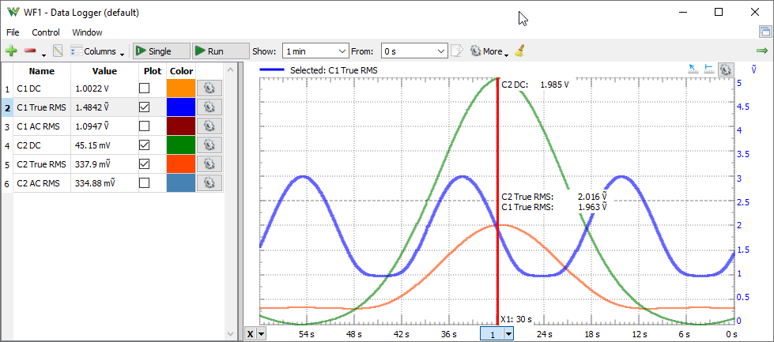

Data Logger

The Data Logger uses the oscilloscope channels. When the Logger is running, it takes control over the physical oscilloscope channels and the Oscilloscope instrument state is “busy”. Similarly, when the Oscilloscope is started, the Logger is stopped. The oscilloscope sweeps are windowed and DC, AC, and DC RMS values calculated. For the True RMS value, the same acquisition is used as for the DC voltage, and the value is calculated with the formula Sqrt( sum( xi ^ 2 ) / N ). The AC RMS value is calculated with the formula Sqrt( sum( (xi - dc) ^ 2 ) / N ).
1. Plot
The history plot has the following components:
- Add: opens a window. Select an item from the list and press the Add button (or double-click) to add it to the plot list. Using the function field, a custom math channel can be created.
- Remove the selected item(s) from the list.
- Edit the currently selected list item.
- Columns: enables or disables columns displaying the average, minimum and maximum levels from the history.
- Show: specifies the time span for the plot.
- From: specifies the start time for the plot.
- Export: See Export in Common Interfaces.
 More
More
- History specifies the time span for the capture.
- Steps specifies the capture steps.
- Update specifies the update rate.
- Timer select between Hardware (uses background thread with continuous data streaming for precise sampling) and Software timer (uses scan shift capture with software timing determined timing).
- Samples specifies the number of samples for each step needed for (true)RMS and AC(rms) measurement.
- Time selects Right to Left or opposite horizontal axis.
- Lets you configure the oscilloscope channel inputs, Offset, Range, Attenuation, Coupling, Sampling mode... options depending on the device.
- Clear: clear the history.
For each channel, the color and scaling option can be specified: auto scaling based on the extremes from the plot history or manually specified offset and range.
See Script in Common interfaces. The local variables are the elementary logger channels, which vary depending on the device.
Example functions:
- C1DC-C2DC
- 25 + C1DC / 0.47